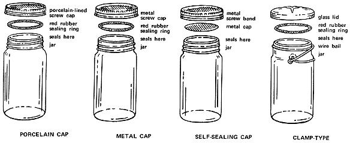

[9] Process containers in hot water bath or pressure cooker. Follow instructions of manufacturer. [10] Remove containers after processing required length of time. Set jars upright on folded towels. [11] Immediately tighten screw-on caps final quarter-turn. Other closures should already be tight. [12] Cool containers for 12 hours. Remove bands from self-sealing caps. Test seal by pressing cap. If top stays down, seal is good. Store.